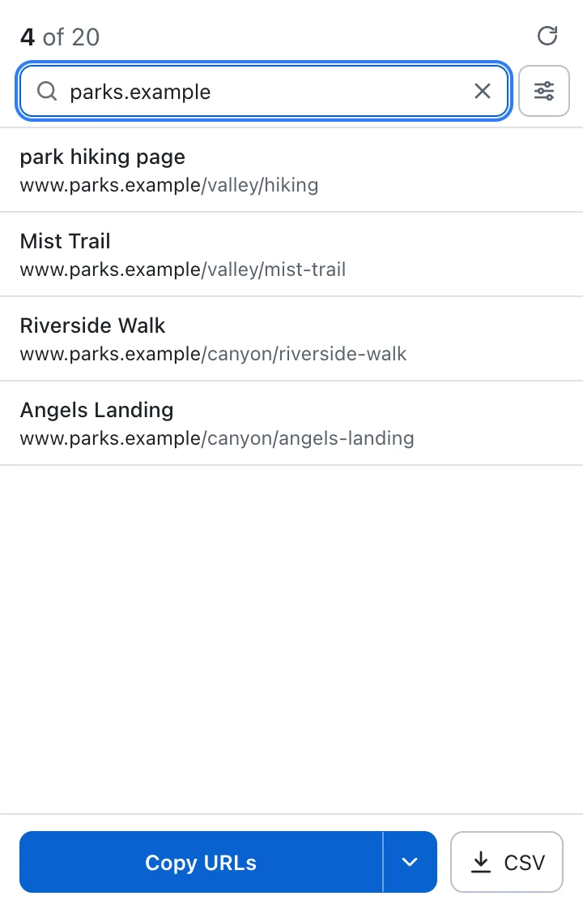

Що він робить

Link Extractor — безкоштовне розширення для Chrome, яке показує посилання сторінки, що ви переглядаєте. Натисніть його значок — і бічна панель покаже кожне посилання в порядку сторінки: повний URL і поруч текст посилання; повтори зведено в один рядок із лічильником. Шукайте в списку або фільтруйте його за доменом, типом (сторінки, файли, email, телефони), внутрішніми чи зовнішніми посиланнями, а також за nofollow, sponsored чи ugc. Посилання-перенаправлення Google, Bing чи Facebook показують адресу, куди вони ведуть. Потім скопіюйте URL або завантажте CSV для Excel; довгі списки не обрізаються, тож сторінку з десятками тисяч посилань копіюють і експортують повністю. Розширення читає сторінку у вашому браузері так, як ви її бачите, тому посилання, додані скриптами, і сторінки за вашим входом теж враховано.


Що він уміє
- Усі посилання відкритої вкладки в порядку сторінки — повні URL разом із текстом посилань
- Дублі зведено в один рядок із лічильником
- Пошук і фільтри: домен, тип, внутрішні чи зовнішні, nofollow, sponsored, ugc
- Копіювання URL або таблиці, яка вставляється в Excel чи Google Таблиці по стовпцях
- Файл CSV, що відкривається в Excel без «кракозябрів»
- Справжні адреси замість посилань-перенаправлень Google, Bing чи Facebook; теги utm прибираються за вашим бажанням
- Посилання з виділеної частини сторінки і лише результати пошуку в Google чи Bing
- Безкоштовно, без облікового запису; посилання не залишають браузер
Інструкції
- Як експортувати всі посилання зі сторінки в CSV, що відкривається в Excel
- Як прибрати теги UTM і розгорнути посилання-перенаправлення
- Як витягти всі посилання з великої сторінки — понад 10 000 посилань
- Як витягти зі сторінки посилання на email, телефони та PDF
- Як скопіювати пари «текст посилання — URL» в Excel у порядку сторінки
Питання
Як експортувати всі посилання сторінки в CSV просто з браузера?
Відкрийте сторінку, натисніть значок Link Extractor (або скористайтеся скороченням — типово Alt+Shift+L, на Mac Ctrl+Shift+L) і натисніть CSV. У файлі один рядок на посилання, у порядку сторінки: повний URL, текст посилання, домен, тип та інше.
Чи правильно відкриється в Excel кирилиця, арабський чи китайський текст посилань?
Так. CSV — це UTF-8 з позначкою порядку байтів, тож Excel показує будь-яке письмо правильно; роздільник залежить від мови Chrome, а якщо Excel кладе все в один стовпець, виберіть інший у розділі CSV separator у Filters & settings. Якщо значення починається з =, +, - або @, перед ним ставиться апостроф, щоб Excel зберіг його як текст, а не виконав як формулу; Excel може показувати цей апостроф у клітинці.
Чи можна експортувати понад 10 000 посилань без обрізання?
Так. Копіювання і файл CSV містять кожне посилання зі списку, нічого не обрізається. У наших перевірках сторінка з 10 000 посилань виводиться приблизно за секунду, а список і далі прокручується та фільтрується без зависань. Панель читає зі сторінки до 200 000 посилань і стільки ж із кожного вбудованого фрейму, а якщо їх більше — повідомляє про це.
Як скопіювати пари «текст посилання — URL», щоб вони вставилися в Excel по стовпцях?
Відкрийте меню поруч із Copy URLs і виберіть Table for Excel: URL, текст, домен і тип потраплять в окремі стовпці, коли ви вставите їх в Excel чи Google Таблиці. Text — URL копіює по одній парі «текст — адреса» в рядку, а URLs — лише адреси, по одній в рядку.
Чи витягує він посилання mailto і tel?
Так. Посилання на email (mailto:) і телефони (tel:,
sms:) є в списку разом із текстом і копіюються так, як вони записані на
сторінці. Щоб лишити тільки їх, виберіть тип Email або Phones у Filters
& settings.
Чи працює він на односторінкових застосунках і динамічних сайтах?
Так. Він читає сторінку такою, якою вона є у вашій вкладці після роботи скриптів, зокрема веб-компоненти (shadow DOM). Якщо нові посилання підвантажуються під час прокручування чи після «Показати ще», прокрутіть і натисніть Refresh на панелі; коли застосунок переходить на іншу сторінку того самого сайту, список оновлюється сам.
Чи дає він повні абсолютні URL замість відносних шляхів?
Так. Кожна адреса в списку, у копії та у файлі — повний URL, розв’язаний так, як це робить
браузер, зокрема на сторінках із тегом <base>.
Як прибрати UTM та інші параметри відстеження з витягнутих URL?
Увімкніть Remove utm and other tracking tags у Filters & settings. Це вилучає utm_source, fbclid, gclid та інші теги відстеження зі списку, копії та файлу, а посилання, що відрізнялися лише цими тегами, стають одним.
Чи зводить він повторювані посилання?
Так. Та сама адреса з’являється один раз, із лічильником того, скільки разів вона є на сторінці. У розділі Duplicates можна також звести посилання, що відрізняються лише частиною після # або слешем у кінці.
Як залишити лише видимі посилання?
Так працює типове налаштування: посилання із закритих меню й прихованих блоків у списку немає. Панель показує, скільки їх, а +N hidden повертає їх до списку.
Чи можна відфільтрувати внутрішні й зовнішні посилання або лише PDF і зображення?
Так. У Filters & settings є внутрішні й зовнішні посилання, типи (сторінки, файли,
email, телефони), домени та nofollow, sponsored чи ugc. Тип Files охоплює PDF, ZIP,
зображення й інші файли; щоб звузити його до одного виду, введіть .pdf у поле
пошуку.
Як отримати чистий список адрес результатів пошуку Google?
На сторінці результатів Google чи Bing панель пропонує Results only: тільки результати, по порядку, без реклами і без власних посилань пошукової системи.
Чи можна взяти посилання лише з частини сторінки?
Так. Виділіть цю частину, клацніть правою кнопкою миші та виберіть Extract links from the selection: у списку буде лише посилання з виділення.
Чи потрібна реєстрація? Чи надсилає він мої посилання кудись?
Ні облікового запису, ні входу не потрібно; розширення безкоштовне, без платних функцій і без реклами. Список будується у вашому браузері, а розширення не робить жодних мережевих запитів: ваші посилання потрапляють лише до буфера обміну або у файл, який ви завантажуєте. Наш сайт рахує встановлення, низькі оцінки та видалення розширення; що саме — сказано в політиці конфіденційності.
Чого він не вміє?
Він працює з відкритою вкладкою: не обходить сайт, не переходить за посиланнями і не
перевіряє, чи вони працюють (коди відповіді). Chrome не дозволяє розширенням читати
сторінки Chrome Web Store і сторінки chrome://, а посилання у фреймах,
вбудованих з інших сайтів, потребують вашого дозволу; панель повідомляє, яку частину
сторінки не вдалося прочитати.